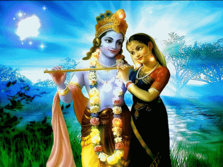

Sri Krishna
In KRISHNA Avatar, Lord Vishnu incarnates himself as KRISHNA, the central character in the epic MAHABHARATA. In this biggest epic of Indian mythology a myriad of topics are covered, including war, love, brotherhood, politics etc. It is essentially the story of two warring groups of cousin brothers, the PANDAVAs and the KAURAVAs. As a part of the Mahabahrata, during the war KRISHNA, gives a long discourse to his disciple ARJUNA, collectively termed as Bhagvad-Gita. Krishna, during his child-hood was responsible for the killing of Kansa. Krishna is also considered to be an ultimate playboy who was resonsible for charming all gopikas (cowherdesses) around him. Unlike Ramayana, Mahabharata deals with more down to earth issues like politics, human nature, human weaknesses, and does not attempt to idealise the characters as in RAMAYANA. His death marks the beginning of Kali yuga.